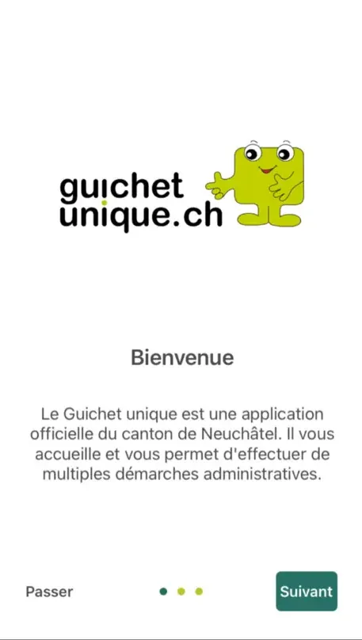
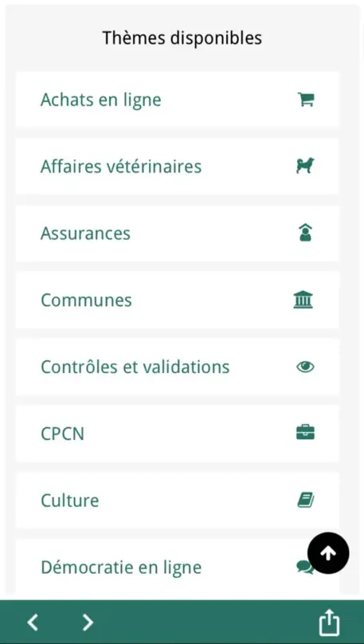
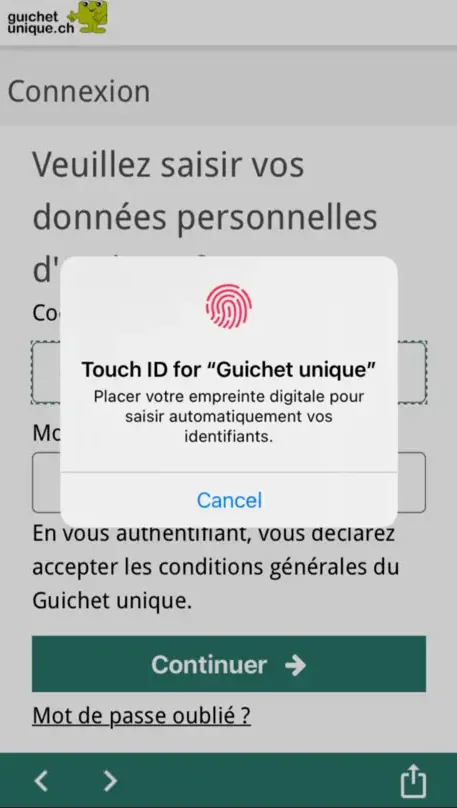
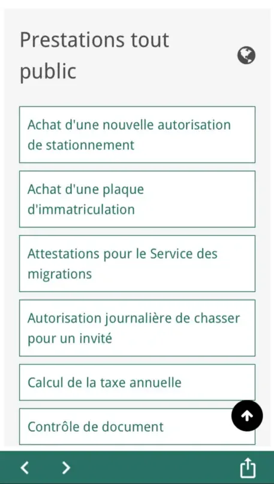

Présentation du projet
GuMobile est l'application mobile de la plateforme Guichet Unique, disponible sur iOS et Android. Elle a été lancée par le Service informatique de l'entité neuchâteloise (SIEN) et ses partenaires en décembre 2022, sous le slogan « Votre administration dans la poche ».
Elle amène les prestations du canton dans un téléphone — impôts, immatriculation, bulletins scolaires, permis de pêche et de chasse, Feuille officielle. Environ 35 000 téléchargements à ce jour, dont les deux tiers sur iOS.




Une coque native autour de prestations web
GuMobile n'est pas une réécriture native des 200 et quelques prestations de la plateforme : c'est une coque .NET MAUI qui héberge les prestations web existantes. Ce choix a une conséquence directe et voulue — une prestation mise à jour côté web l'est aussitôt dans l'application, sans passer par une soumission aux magasins.
Une base de code, deux magasins
.NET MAUI produit les binaires iOS et Android depuis un projet unique, ce qui évite d'entretenir deux applications en parallèle pour un service dont la valeur est ailleurs : dans les prestations qu'il rend accessibles.
La connexion sort de la WebView
L'authentification est prise en charge nativement plutôt que dans la vue web. C'est ce qui permet à l'application de s'appuyer sur les mécanismes du système, et à la session de survivre au passage d'une prestation à l'autre.
Ce qui reste sur ordinateur
Quelques prestations plus complexes passent encore par la version ordinateur. L'application ne prétend pas les couvrir : mieux vaut renvoyer explicitement vers le poste de travail que proposer un parcours mobile qui échouera à mi-chemin.
Ma contribution
J'assure la maintenance et l'amélioration de l'application. Le chantier le plus visible a été l'ajout de la connexion par SwissID et AGOV, les deux identités électroniques reconnues en Suisse, à côté du compte Guichet Unique historique.
SwissID et AGOV
La connexion passe par un serveur de fédération d'identité OpenID Connect, opéré par le canton. L'application ne dialogue donc pas directement avec SwissID ou AGOV : elle s'adresse au fédérateur, qui porte la relation avec chaque fournisseur d'identité. Ajouter un fournisseur devient une affaire de configuration côté serveur plutôt qu'une nouvelle version de l'application.
Sortir de la vue web pour s'authentifier
Un parcours de connexion enfermé dans une WebView est à la fois moins sûr et moins agréable. Le faire sortir vers le navigateur du système demande de gérer proprement le retour dans l'application et la reprise de session — c'est la partie la moins spectaculaire du travail, et celle qui se remarque le plus quand elle est bâclée.
Livrer sur deux magasins
Chaque version part vers l'App Store et le Play Console, avec leurs cycles de revue et leurs exigences propres. L'automatisation de ces livraisons, via Fastlane, retire de l'équation la partie la plus fastidieuse et la plus sujette à l'erreur humaine.